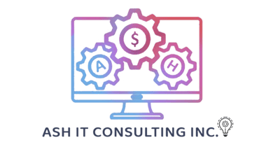

Technology modernization
Use Azure, Microsoft 365, Power Platform, and custom software to modernize services while respecting real-world constraints.
- Cloud and application modernization
- Microsoft platform delivery
- Data engineering and reporting

ASH IT CONSULTING INC.Public sector & procurement
ASH IT supports government and municipal organizations with practical AI, automation, data, cloud, software, and quality services.
Built for the work
Use Azure, Microsoft 365, Power Platform, and custom software to modernize services while respecting real-world constraints.
Improve service delivery and internal operations with controlled AI and human-centred automation.
Bring confidence to new digital services through practical testing, technical review, and delivery discipline.
We are registered across relevant Canadian supplier channels and prepared to respond to defined technology requirements.
A qualified partner
We combine hands-on technology implementation with a clear, scope-led approach suitable for fixed deliverables, operational improvement, and longer-term modernization.
Discuss an opportunity →Start the conversation
We’ll bring a practical perspective on the architecture, delivery path, and measurable outcome.